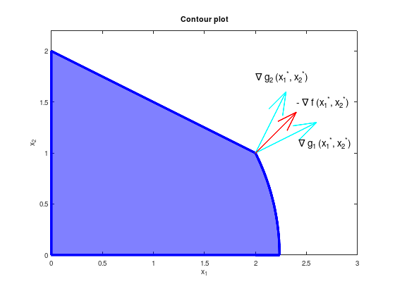
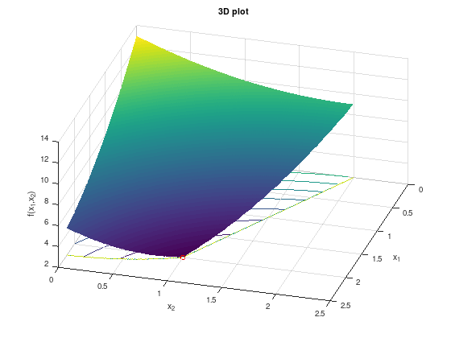

RM01¶
Consider the following constrained optimization problem:
\[\begin{split}
\begin{array}{lll}
\textrm{minimize} & f(x_1, x_2) &= ( x_1 - 3 )^2 + ( x_2 - 2 )^2 & \\
\textrm{subject to} & g_{1}(x_1, x_2) &= {x_1}^2 + {x_2}^2 - 5 &\leq 0, \\
& g_{2}(x_1, x_2) &= {x_1} + 2{x_2} - 4 &\leq 0, \\
& g_{3}(x_1, x_2) &= -{x_1} &\leq 0, \\
& g_{4}(x_1, x_2) &= -{x_2} &\leq 0, \\
\end{array}
\end{split}\]
with
\[\begin{split}
\nabla f(x_1, x_2) = \begin{pmatrix} 2(x_1 - 3) \\ 2(x_2 - 2) \end{pmatrix}, \quad
\nabla g_{1}(x_1, x_2) = \begin{pmatrix} 2 x_1 \\ 2 x_2 \end{pmatrix}, \quad
\nabla g_{2}(x_1, x_2) = \begin{pmatrix} 1 \\ 2 \end{pmatrix}.
\end{split}\]
The optimal point is \(\begin{pmatrix} {x_1}^{*} \\ {x_2}^{*} \end{pmatrix} = \begin{pmatrix} 2 \\ 1 \end{pmatrix}\) with \(f({x_1}^{*}, {x_2}^{*}) = 2\) and \(\nabla f({x_1}^{*}, {x_2}^{*}) = \begin{pmatrix} -2 \\ -2 \end{pmatrix}\).
% Optimal point.
px = 2;
py = 1;
g1 = @(x) real (sqrt (5 - x.^2));
g2 = @(x) -(x - 4) ./ 2;
% Visualize constrained set of feasible solutions (blue).
x = linspace (2, sqrt(5), 100);
area ([0 2 x], [g2(0) g2(2) g1(x)], ...
'FaceColor', 'blue', ...
'FaceAlpha', 0.5, ...
'LineWidth', 4, ...
'EdgeColor', 'blue');
% Visualize scaled gradients of objective function (red arrow)
% and constraint functions (cyan arrows).
hold on;
quiver (px, py, 0.15 * 4, 0.15 * 2, 'LineWidth', 2, 'c');
quiver (px, py, 0.3 * 1, 0.3 * 2, 'LineWidth', 2, 'c');
quiver (px, py, 0.2 * 2, 0.2 * 2, 'LineWidth', 2, 'r');
text (2.40, 1.50, '- \nabla f ({x_1}^{*}, {x_2}^{*})', 'FontSize', 14);
text (2.00, 1.75, '\nabla g_2 ({x_1}^{*}, {x_2}^{*})', 'FontSize', 14);
text (2.42, 1.10, '\nabla g_1 ({x_1}^{*}, {x_2}^{*})', 'FontSize', 14);
axis equal;
xlim ([0 3.0]);
ylim ([0 2.2]);
xlabel ('x_1');
ylabel ('x_2');
title ('Contour plot');

% Optimal point.
px = 2;
py = 1;
pz = 2;
[X1, X2] = meshgrid (linspace (0, 2.5, 500));
FX = (X1 - 3).^2 + (X2 - 2).^2;
% Remove infeasible points.
FX((X1.^2 + X2.^2) > 5) = inf;
FX(X1 + 2*X2 > 4) = inf;
surfc (X1, X2, FX);
shading flat;
hold on;
plot3 (px, py, pz, 'ro');
xlabel ('x_1');
ylabel ('x_2');
zlabel ('f(x_1,x_2)');
title ('3D plot');
view (106, 44);

At the optimal point only the constraints \(g_{1}\) and \(g_{2}\) are active, thus \({\lambda_3}^{*} = {\lambda_4}^{*} = 0\).
According to KKT, there exist unique \({\lambda_1}^{*} \geq 0\), \({\lambda_2}^{*} \geq 0\) with
\[\begin{split}
\begin{pmatrix} -2 \\ -2 \end{pmatrix}
+ {\lambda_1}^{*} \begin{pmatrix} 4 \\ 2 \end{pmatrix}
+ {\lambda_2}^{*} \begin{pmatrix} 1 \\ 2 \end{pmatrix} = 0
\end{split}\]
thus \({\lambda_1}^{*} = \frac{1}{3}\) and \({\lambda_2}^{*} = \frac{2}{3}\).
Numerical experiment (only Matlab)¶
function RM01()
% Nonlinear objective function.
fun = @(x) (x(1) - 3).^2 + (x(2) - 2).^2;
% Starting point.
x0 = [2, 1];
% Linear inequality constraints A * x <= b.
A = [1 2]; % g_2
b = [4];
% Linear equality constraints Aeq * x = beq.
Aeq = [];
beq = [];
% Bounds lb <= x <= ub
lb = [0, 0]; % g_3 and g_4
ub = [];
% Call solver.
[x,fval,exitflag,output,lambda,grad,hessian] = fmincon (fun,x0,A,b,Aeq,beq,lb,ub,@nonlcon);
% Display interesting details.
exitflag % == 1 success
x % optimal solution
fval % function value at optimal solution
grad % gradient of fun at optimal solution
hessian % Hessian matrix of fun at optimal solution
lambda % Lagrange parameter
lambda.lower % lambda_3 and lambda_4
lambda.ineqlin % lambda_2
lambda.ineqnonlin % lambda_1
end
% Nonlinear constraint function for g_1.
function [c,ceq] = nonlcon(x)
c = x(1).^2 + x(2).^2 - 5;
ceq = 0;
end